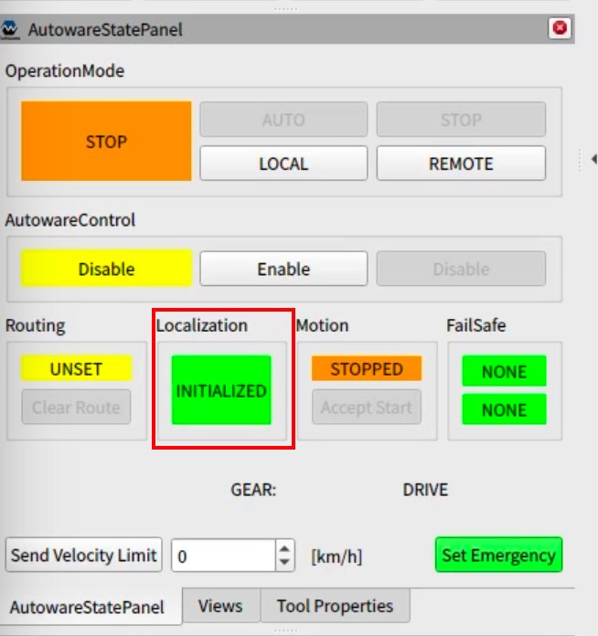

Operation (Finals Competition)
Note: This is a draft page. Information on this page may change.
This page outlines the procedure to operate the competition vehicle (a drive-by-wired golf cart, hereafter referred to as “golf cart”) on a laptop with Autoware installed.
※Instructions are based on the assumption that the repository for development is located in /home/autoware/aichallenge2023-integration-final.
Steps to Start Autonomous Driving
This section details the process from connecting your laptop to the vehicle up to initiating autonomous driving.
※Please be sure to read the safety precautions before heading to the test field.
(Competition participants) Open a terminal window and execute the following command to start Autoware.
$ cd ~/aichallenge2023-integration-final/scripts $ ./run_autoware_on_vehicle.sh(Competition participant) Complete initialization of localization.
- Input 2D pose estimate from rViz.
- Confirm that the
Localizationdisplay on theAutowareStatePanelisINITIALIZED. 
(Competiton participant) Set the goal point.
- Open a terminal window and execute
~/aichallenge2023-integration-final/scripts/set_goal.shto set the goal point. - Confirm with rViz that the route to the goal is drawn.
- Open a terminal window and execute
(Safety driver) Set the golf cart mode to
automatic mode.(Competiton participant) Enable vehicle control by Autoware.
- Click on the
Enablebutton of theAutowareControlin theAutowareStatePanelafter receiving the mentor’s instructions. - Confirm that the display of
AutowareControlin theAutowareStatePanelisEnabled.
- Click on the
(Safety Driver) Check the steer behavior, confirm that the golf card is successfully accepting Autoware control, and tell the competition participant that the vehicle is ready to engage in autonomous driving.
(Competiton participant) Sets Autoware to autonomous driving mode.
- Tell the safety driver, “I will start automatic operation”.
- Click the
AUTObutton in theOperationModeof theAutowareStatePanel. - Confirm that the
OperationModedisplay on theAutowareStatePanelis set toAUTONOMOUS.
When the safety driver performed override
Should there be a risk of the vehicle hitting a curb or an obstacle during autonomous driving operation, the safety driver will apply the brakes and switch the vehicle control from automatic operation to manual operation. This is called override.
If the safety driver performs an override while the vehicle is engaging with Task 1, Task 2, or Task 3-1, the current task will be forfeited, and autonomous driving will restart at the subsequent task.
- (Safety Driver) Inform the participant of the override
- (Safety Driver) Set the golf cart to
manual mode. - (Safety Driver) Move the vehicle to the starting point of the next task.
- Click on the
Disablebutton of theAutowareControlin theAutowareStatePanel. Mentor will ask you to do so. - Confirm that the display of
AutowareControlin theAutowareStatePanelis set toDisable. - Resume from step No.4 in Steps to Start Autonomous Driving (Safety Driver)Set the golf cart mode to
automatic mode.
Safety precautions
- Failure to switch to automatic operation mode may occur due to a poor HW connection or other reasons. Failure to switch to the automatic operation mode is diagnosed by the safety driver. If this event occurs, follow the mentor’s instructions and redo the procedures to start autonomous driving.
- Participants who are not riding in the vehicle should stay on the sidewalk during the autonomous driving. Please do not enter the designated area for competition or approach the vehicle.
- Please be sure to hold onto the upper handrail during the autonomous driving.
- Please secure your laptop computer used for autonomous driving with a provided band. If you have difficulty typing on the keyboard, you may use the USB wireless keyboard. Please ask to your mentor.